Library › Topics › Purpose & Meaning
Everything on purpose and meaning
The big shelf: what a good life is, what work is for, and what to do on a Tuesday when none of it feels like it matters. 122 books, free.
122 BOOKS · ALL FREE · AUDIO IN 26 LANGUAGES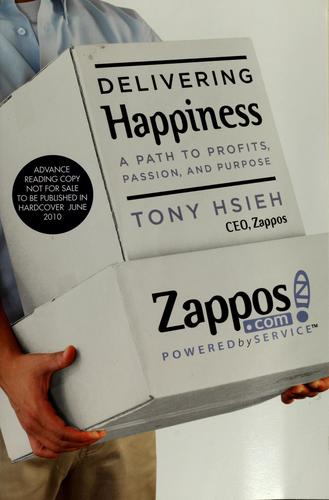
Delivering Happiness: A Path to Profits, Passion, and PurposeTony Hsieh · 2010Tony Hsieh's story of Zappos: from worm farming and LinkExchange to selling shoes online with a culture so str11 min · 8 lessons · free summary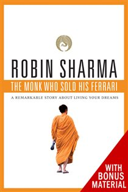
The Monk Who Sold His FerrariRobin Sharma · 1997A star lawyer collapses in court, sells everything, and returns from the Himalayas with seven virtues that reb8 min · 6 lessons · free summaryThink Like a MonkJay Shetty · 2020You don't need to shave your head to think like a monk: detach from noise, find your dharma, and serve your wa8 min · 6 lessons · free summary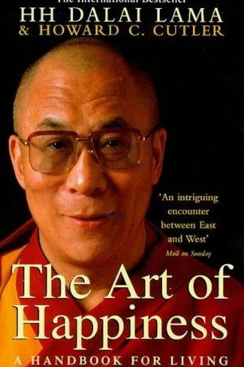
The Art of HappinessDalai Lama & Howard Cutler · 1998Cutler's dialogues with the Dalai Lama distil happiness into a trainable skill: it comes from inner discipline8 min · 6 lessons · free summary DharmaAmish Tripathi · 2020Amish Tripathi reads the Ramayana and Mahabharata as practical guides to living - what duty means, when desire9 min · 7 lessons · free summary
DharmaAmish Tripathi · 2020Amish Tripathi reads the Ramayana and Mahabharata as practical guides to living - what duty means, when desire9 min · 7 lessons · free summary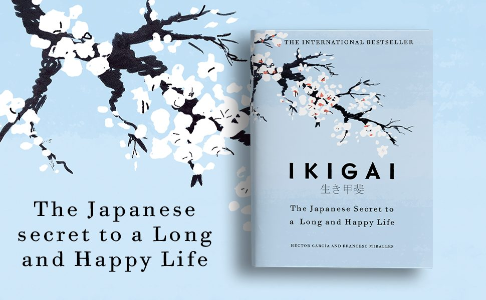
IkigaiHéctor García & Francesc Miralles · 2016Your ikigai - the reason you get up in the morning - sits where passion, mission, vocation, and profession ove9 min · 7 lessons · free summary Life's Amazing SecretsGaur Gopal Das · 2018Life is a car with four wheels: personal, relationships, work, and contribution. Ignore any wheel and the whol8 min · 6 lessons · free summary
Life's Amazing SecretsGaur Gopal Das · 2018Life is a car with four wheels: personal, relationships, work, and contribution. Ignore any wheel and the whol8 min · 6 lessons · free summary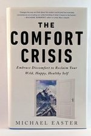
The Comfort CrisisMichael Easter · 2021We engineered discomfort out of life and imported anxiety in its place. The fix: misogi challenges, boredom, h8 min · 6 lessons · free summary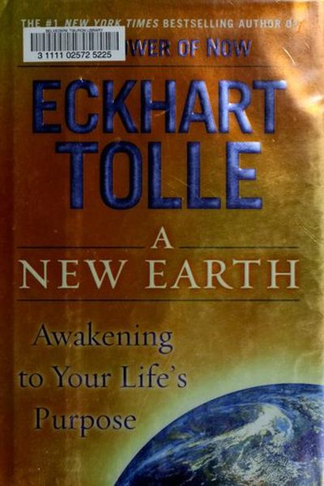
A New EarthEckhart Tolle · 2005Your ego is a fiction you defend. See it, step out of it, and your real purpose - presence - appears.8 min · 6 lessons · free summary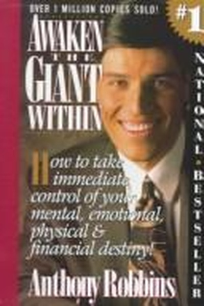
Awaken the Giant WithinTony Robbins · 1991Your life changes the moment you change the meanings you attach to events and the questions you ask yourself.8 min · 6 lessons · free summary Ego Is the EnemyRyan Holiday · 2016At every career stage - aspiring, succeeding, failing - ego is the invisible saboteur. Humility, purpose, and 8 min · 6 lessons · free summary
Ego Is the EnemyRyan Holiday · 2016At every career stage - aspiring, succeeding, failing - ego is the invisible saboteur. Humility, purpose, and 8 min · 6 lessons · free summary If Truth Be ToldOm Swami · 2015Om Swami tells the truth about trading success for the Himalayas - corporate emptiness, monastic hardship and 8 min · 6 lessons · free summary
If Truth Be ToldOm Swami · 2015Om Swami tells the truth about trading success for the Himalayas - corporate emptiness, monastic hardship and 8 min · 6 lessons · free summary Letters from a StoicSeneca · 65Seneca's letters to his friend Lucilius are a masterclass in the art of living - how to use time, handle wealt9 min · 7 lessons · free summary
Letters from a StoicSeneca · 65Seneca's letters to his friend Lucilius are a masterclass in the art of living - how to use time, handle wealt9 min · 7 lessons · free summary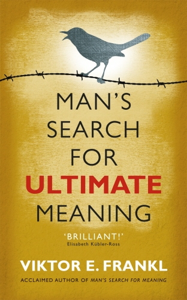
Man's Search for MeaningViktor E. Frankl · 1946Everything can be taken from a man but one thing: the freedom to choose one's attitude in any given set of cir9 min · 7 lessons · free summary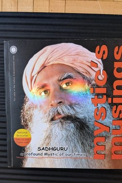
Mystic's MusingsSadhguru · 2003Sadhguru's first book of Q&As: the mystical made practical, with humour and no soft soap.7 min · 9 lessons · free summary Nudge: Improving Decisions About Health, Wealth, and HappinessRichard Thaler & Cass Sunstein · 2008You can't stop being human - but you can design your environment so being human leads you the right way.8 min · 6 lessons · free summary
Nudge: Improving Decisions About Health, Wealth, and HappinessRichard Thaler & Cass Sunstein · 2008You can't stop being human - but you can design your environment so being human leads you the right way.8 min · 6 lessons · free summary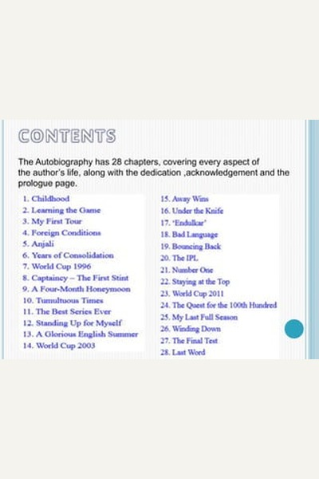
Playing It My WaySachin Tendulkar · 2014Talent gets you noticed; only relentless preparation, discipline and humility keep you at the top for two deca8 min · 6 lessons · free summary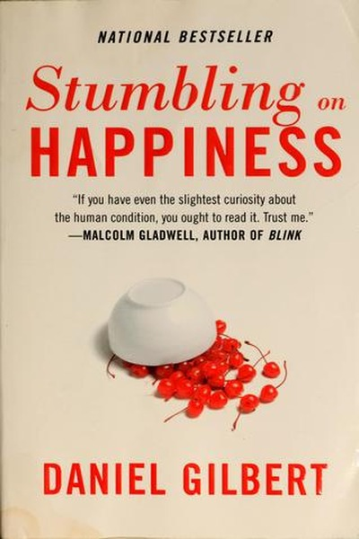
Stumbling on HappinessDaniel Gilbert · 2006Your imagination is a faulty time machine: it predicts how you'll feel later, and it is systematically wrong - 8 min · 6 lessons · free summary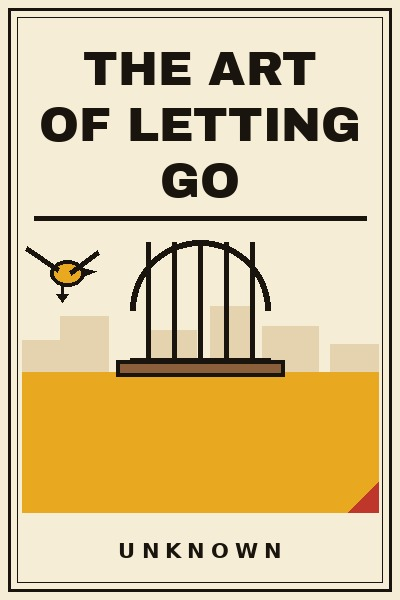
The Art of Letting GoUnknown · 2026Everyone talks about holding on. Almost nobody teaches the other skill, the one with the bigger returns: putti11 min · 11 lessons · free summary The Book of JoyDalai Lama & Desmond Tutu · 2016Joy is not the absence of suffering but a skill - built through gratitude, forgiveness, humility and compassio8 min · 6 lessons · free summary
The Book of JoyDalai Lama & Desmond Tutu · 2016Joy is not the absence of suffering but a skill - built through gratitude, forgiveness, humility and compassio8 min · 6 lessons · free summary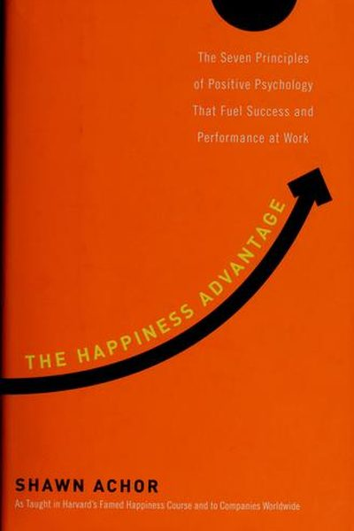
The Happiness AdvantageShawn Achor · 2010Happiness doesn't follow success - it fuels it. Train your brain to be positive first, and performance follows9 min · 7 lessons · free summary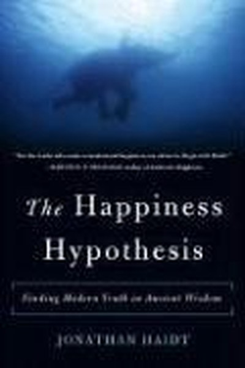
The Happiness HypothesisJonathan Haidt · 2006Jonathan Haidt tests ten ancient ideas about happiness against modern psychology - and finds that the old wisd9 min · 7 lessons · free summary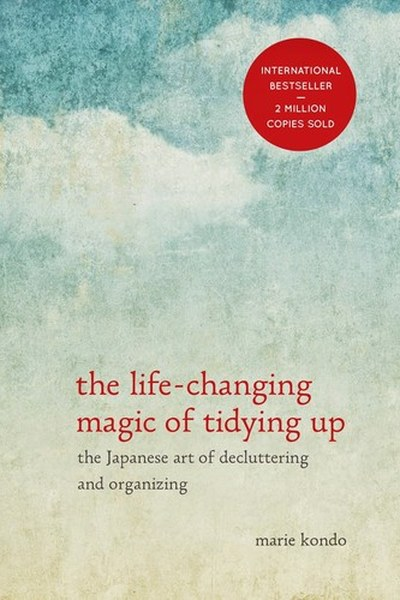
The Life-Changing Magic of Tidying UpMarie Kondo · 2011Marie Kondo's KonMari method: keep only what sparks joy, organize by category not location, and let a tidy hom8 min · 6 lessons · free summaryThe ProphetKahlil Gibran · 1923On Love, Children, Work, Freedom, Death: the prophet answers the questions every life asks.7 min · 8 lessons · free summary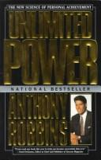
Unlimited PowerTony Robbins · 1986Peak states are not accidents: physiology, focus and meaning produce them on demand. Model what works, master 10 min · 10 lessons · free summary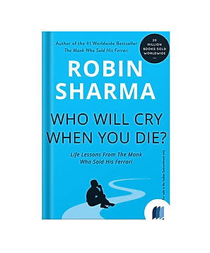
Who Will Cry When You Die?Robin Sharma · 1999When you were born, you cried and the world rejoiced. Live so that when you die, the world cries and you rejoi8 min · 6 lessons · free summary12 Rules for LifeJordan B. Peterson · 2018Life is suffering; the antidote is responsibility. Fix yourself first, aim at meaning, and tell the truth - or8 min · 6 lessons · free summary As a Man ThinkethJames Allen · 1903You are literally what you think: character, circumstance, health, and destiny are woven - thread by thread - 8 min · 6 lessons · free summary
As a Man ThinkethJames Allen · 1903You are literally what you think: character, circumstance, health, and destiny are woven - thread by thread - 8 min · 6 lessons · free summary Atomic HabitsJames Clear · 2018Getting 1% better every day compounds into a completely different life. Habits are the compound interest of se11 min · 8 lessons · free summary
Atomic HabitsJames Clear · 2018Getting 1% better every day compounds into a completely different life. Habits are the compound interest of se11 min · 8 lessons · free summary Attitude Is EverythingJeff Keller · 1999Your attitude is your window on the world - and success is a three-step chain: think, speak, act. Keep the win8 min · 6 lessons · free summary
Attitude Is EverythingJeff Keller · 1999Your attitude is your window on the world - and success is a three-step chain: think, speak, act. Keep the win8 min · 6 lessons · free summary Autobiography of a YogiParamahansa Yogananda · 1946Yogananda's memoir of his search for a guru, his years with Sri Yukteswar, and the science of Kriya Yoga that 9 min · 7 lessons · free summary
Autobiography of a YogiParamahansa Yogananda · 1946Yogananda's memoir of his search for a guru, his years with Sri Yukteswar, and the science of Kriya Yoga that 9 min · 7 lessons · free summary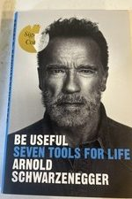
Be UsefulArnold Schwarzenegger · 2023Have a clear vision, think big, work like hell, sell your story, shift gears when knocked down, stay curious, 8 min · 6 lessons · free summary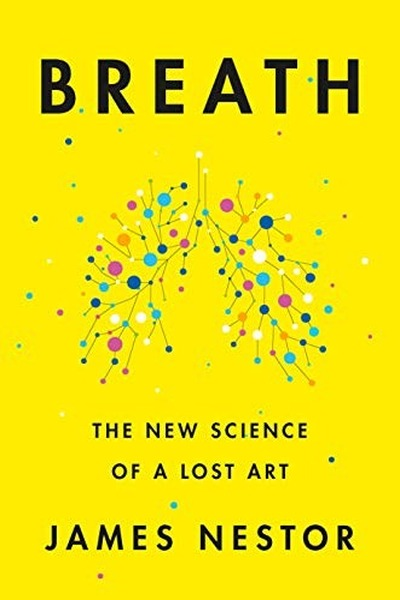
BreathJames Nestor · 2020Breathing is the only bodily function you can consciously control - and most of us are doing it badly, with hu8 min · 6 lessons · free summary Can't Hurt MeDavid Goggins · 2018You're only using 40% of your capability. The other 60% sits behind a wall of suffering your mind built to pro9 min · 7 lessons · free summary
Can't Hurt MeDavid Goggins · 2018You're only using 40% of your capability. The other 60% sits behind a wall of suffering your mind built to pro9 min · 7 lessons · free summary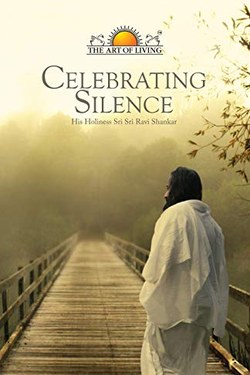
Celebrating SilenceSri Sri Ravi Shankar · 2002Real answers come from quiet - the book of talks on breath, doubt, love and the joy of a still mind.7 min · 9 lessons · free summary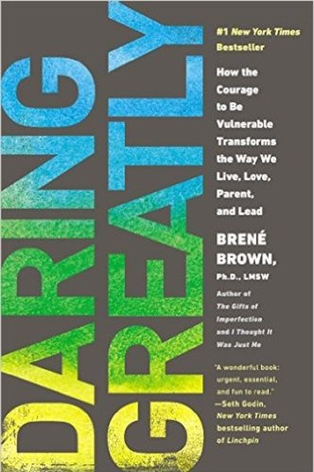
Daring GreatlyBrené Brown · 2012Vulnerability isn't weakness - it's the birthplace of courage, connection and everything worth doing.8 min · 6 lessons · free summary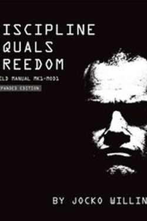
Discipline Equals FreedomJocko Willink · 2017Do the hard thing, early, daily - and the freedom you get is the freedom from your own weakness.7 min · 9 lessons · free summary Do Epic ShitAnkur Warikoo · 2021Success is a lagging indicator of daily habits. Failure is tuition. And the best time to start was yesterday - 8 min · 6 lessons · free summary
Do Epic ShitAnkur Warikoo · 2021Success is a lagging indicator of daily habits. Failure is tuition. And the best time to start was yesterday - 8 min · 6 lessons · free summary Don't Lose Your Mind, Lose Your WeightRujuta Diwekar · 2009Rujuta Diwekar's commonsense Indian guide: eat local and seasonal, never skip meals, train consistently, sleep9 min · 7 lessons · free summary
Don't Lose Your Mind, Lose Your WeightRujuta Diwekar · 2009Rujuta Diwekar's commonsense Indian guide: eat local and seasonal, never skip meals, train consistently, sleep9 min · 7 lessons · free summary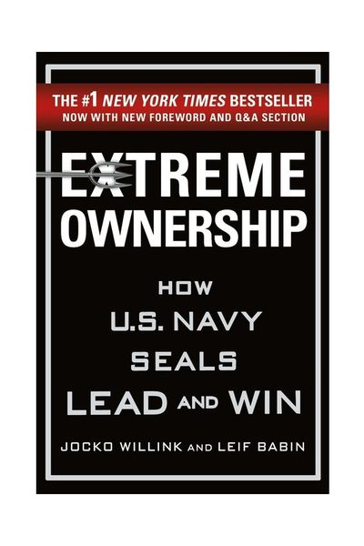
Extreme OwnershipJocko Willink & Leif Babin · 2015There are no bad teams, only bad leaders. Own everything in your world - the blame, the fix, and therefore the8 min · 6 lessons · free summary Five Point SomeoneChetan Bhagat · 2004Chetan Bhagat's campus classic about three IIT 'failures' - proof that grades measure compliance while life re8 min · 6 lessons · free summaryFreedom from the KnownJ. Krishnamurti · 1969Freedom is not found in systems or gurus but in observing yourself without judgment, moment by moment.8 min · 6 lessons · free summary
Five Point SomeoneChetan Bhagat · 2004Chetan Bhagat's campus classic about three IIT 'failures' - proof that grades measure compliance while life re8 min · 6 lessons · free summaryFreedom from the KnownJ. Krishnamurti · 1969Freedom is not found in systems or gurus but in observing yourself without judgment, moment by moment.8 min · 6 lessons · free summary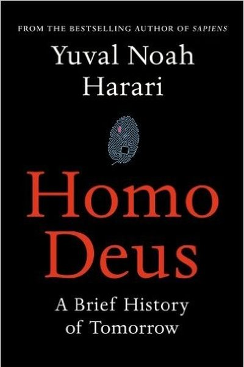
Homo DeusYuval Noah Harari · 2015Famine, plague and war are being beaten - next, humans will try to upgrade into gods. The future belongs to wh8 min · 6 lessons · free summary How to Fail at Almost Everything and Still Win BigScott Adams · 2013The Dilbert creator failed at everything - then won by using systems instead of goals, stacking mediocre skill8 min · 6 lessons · free summary
How to Fail at Almost Everything and Still Win BigScott Adams · 2013The Dilbert creator failed at everything - then won by using systems instead of goals, stacking mediocre skill8 min · 6 lessons · free summary How to Stop Worrying and Start LivingDale Carnegie · 1948Live in day-tight compartments, accept the worst, then improve on it - worry is a habit, and habits have off-s8 min · 6 lessons · free summary
How to Stop Worrying and Start LivingDale Carnegie · 1948Live in day-tight compartments, accept the worst, then improve on it - worry is a habit, and habits have off-s8 min · 6 lessons · free summary Ignited MindsA.P.J. Abdul Kalam · 2002A.P.J. Abdul Kalam's message to young India - five missions for a developed nation, and the truth that ignited8 min · 6 lessons · free summary
Ignited MindsA.P.J. Abdul Kalam · 2002A.P.J. Abdul Kalam's message to young India - five missions for a developed nation, and the truth that ignited8 min · 6 lessons · free summary India 2020A.P.J. Abdul Kalam & Y.S. Rajan · 1998Nation-building is not a government project; it is a mission every citizen adopts through competence, integrit8 min · 6 lessons · free summary
India 2020A.P.J. Abdul Kalam & Y.S. Rajan · 1998Nation-building is not a government project; it is a mission every citizen adopts through competence, integrit8 min · 6 lessons · free summary Inner EngineeringSadhguru · 2016Sadhguru's practical yogic guide to engineering your inner world so joy becomes your default state - not a goa8 min · 6 lessons · free summaryJnana YogaSwami Vivekananda · 1896Discrimination between the real and the unreal is the path: not more thinking, but clearer seeing.7 min · 10 lessons · free summary
Inner EngineeringSadhguru · 2016Sadhguru's practical yogic guide to engineering your inner world so joy becomes your default state - not a goa8 min · 6 lessons · free summaryJnana YogaSwami Vivekananda · 1896Discrimination between the real and the unreal is the path: not more thinking, but clearer seeing.7 min · 10 lessons · free summary Karma YogaSwami Vivekananda · 1896The secret of action is detachment from its fruits, not indifference to the work.7 min · 10 lessons · free summary
Karma YogaSwami Vivekananda · 1896The secret of action is detachment from its fruits, not indifference to the work.7 min · 10 lessons · free summary Karma: A Yogi's Guide to Crafting Your DestinySadhguru · 2021Sadhguru redefines karma as the mind's programming - showing how to see your patterns, widen the gap between s8 min · 6 lessons · free summary
Karma: A Yogi's Guide to Crafting Your DestinySadhguru · 2021Sadhguru redefines karma as the mind's programming - showing how to see your patterns, widen the gap between s8 min · 6 lessons · free summary Karmayogi: A Biography of E. SreedharanP.R. Narayanan · 2014Grand projects are won not by genius but by ruthless discipline: clear targets, honest reporting and refusal t8 min · 6 lessons · free summary
Karmayogi: A Biography of E. SreedharanP.R. Narayanan · 2014Grand projects are won not by genius but by ruthless discipline: clear targets, honest reporting and refusal t8 min · 6 lessons · free summary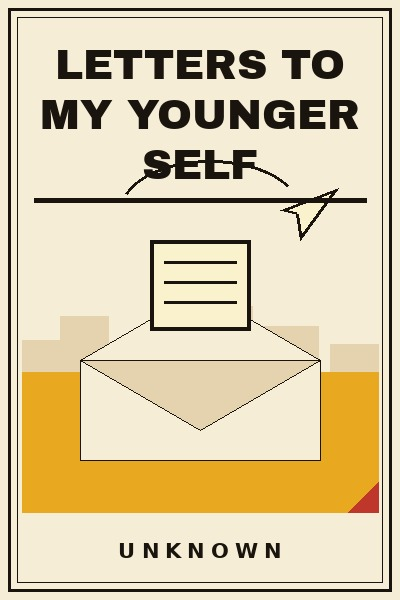
Letters to My Younger SelfUnknown · 2026Somewhere between the person you were and the person you are, there is a conversation that never happened. Thi11 min · 11 lessons · free summary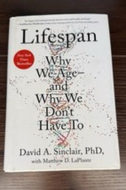
LifespanDavid A. Sinclair · 2019Aging is the root cause of most diseases; slow it, and everything downstream improves - the Sinclair manifesto7 min · 10 lessons · free summary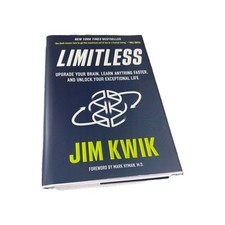
LimitlessJim Kwik · 2020There's no such thing as a good or bad memory - only trained and untrained. Unlimit your mindset, motivation, 8 min · 6 lessons · free summary Lost ConnectionsJohann Hari · 2018Depression and anxiety are not just broken brain chemistry: they are largely responses to disconnection, from 10 min · 10 lessons · free summary
Lost ConnectionsJohann Hari · 2018Depression and anxiety are not just broken brain chemistry: they are largely responses to disconnection, from 10 min · 10 lessons · free summary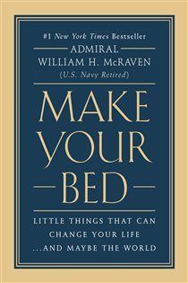
Make Your BedAdmiral William H. McRaven · 2017If you want to change the world, start off by making your bed - small disciplines cascade, and you can't do it8 min · 6 lessons · free summary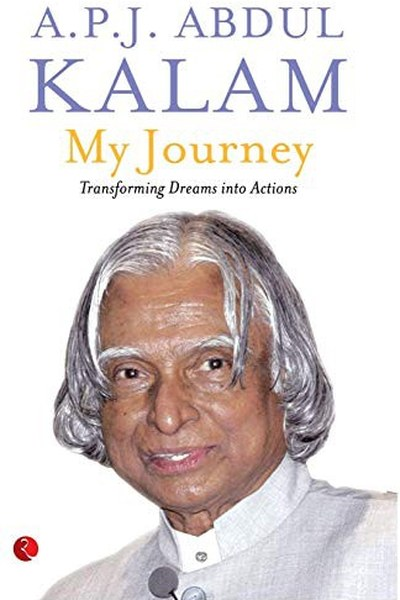
My Journey: Transforming Dreams into ActionsA.P.J. Abdul Kalam · 2013Kalam's warmest memoir: the boatman, the teacher, the stranger and the small acts of kindness that shaped the 8 min · 6 lessons · free summary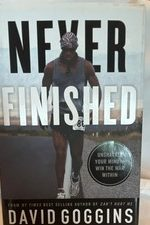
Never FinishedDavid Goggins · 2022You never arrive. Goggins returns to burn the trophy case: mental lab work, the disciplined life as art, and e8 min · 6 lessons · free summary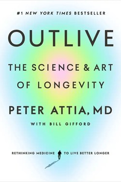
OutlivePeter Attia · 2023Attia's medicine 3.0: act early on the four horsemen - heart disease, cancer, neurodegeneration, diabetes.7 min · 10 lessons · free summary PeakAnders Ericsson & Robert Pool · 2016Anders Ericsson, the researcher behind the 10,000-hour rule, explains what actually creates expertise: deliber9 min · 7 lessons · free summaryPsycho-CyberneticsMaxwell Maltz · 1960You will never outperform your self-image. Upgrade the image, and the results upgrade themselves.11 min · 8 lessons · free summary
PeakAnders Ericsson & Robert Pool · 2016Anders Ericsson, the researcher behind the 10,000-hour rule, explains what actually creates expertise: deliber9 min · 7 lessons · free summaryPsycho-CyberneticsMaxwell Maltz · 1960You will never outperform your self-image. Upgrade the image, and the results upgrade themselves.11 min · 8 lessons · free summary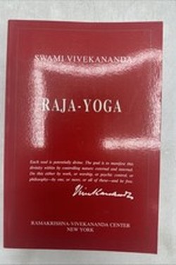
Raja YogaSwami Vivekananda · 1896The mind is the instrument of everything; Raja Yoga is the training of that instrument by concentration.7 min · 10 lessons · free summary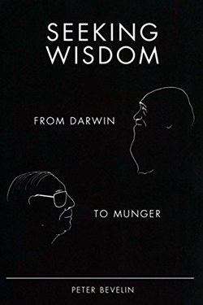
Seeking WisdomPeter Bevelin · 2007Wisdom is mostly avoiding stupidity: the book catalogues the traps of thinking and the questions that disarm t7 min · 9 lessons · free summary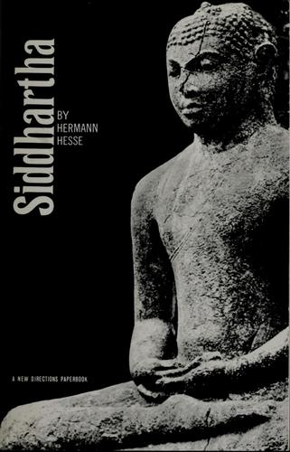
SiddharthaHermann Hesse · 1922A Brahmin's son tries asceticism, teachers, wealth and pleasure, and finds wisdom in none of them, until a riv8 min · 10 lessons · free summary So Good They Can't Ignore YouCal Newport · 2012Don't follow your passion - bring it with you. Build career capital through deliberate practice, then cash it 8 min · 6 lessons · free summary
So Good They Can't Ignore YouCal Newport · 2012Don't follow your passion - bring it with you. Build career capital through deliberate practice, then cash it 8 min · 6 lessons · free summary Stillness Is the KeyRyan Holiday · 2019Every tradition agrees on one thing: the still mind wins. Master the mental, spiritual, and physical domains - 8 min · 6 lessons · free summary
Stillness Is the KeyRyan Holiday · 2019Every tradition agrees on one thing: the still mind wins. Master the mental, spiritual, and physical domains - 8 min · 6 lessons · free summary Tao Te ChingLao Tzu · -400The Tao that can be named is not the Tao - yet its way is practical: softness, emptiness and effortless action7 min · 8 lessons · free summary
Tao Te ChingLao Tzu · -400The Tao that can be named is not the Tao - yet its way is practical: softness, emptiness and effortless action7 min · 8 lessons · free summary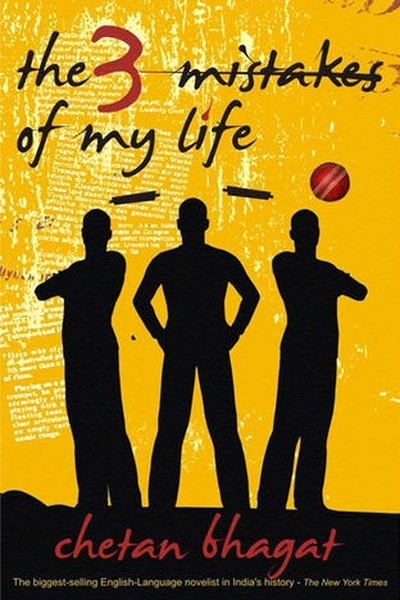
The 3 Mistakes of My LifeChetan Bhagat · 2008Chetan Bhagat's novel about friendship, small-town business and Gujarat's turbulence - your mistakes don't def8 min · 6 lessons · free summary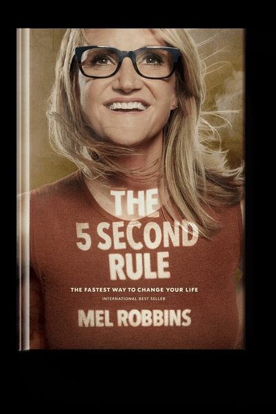
The 5 Second RuleMel Robbins · 2017You'll never feel like it. Count 5-4-3-2-1 and move before your brain kills the impulse - a launch code for th8 min · 6 lessons · free summary The 7 Habits of Highly Effective PeopleStephen R. Covey · 1989Effectiveness isn't a technique - it's character. Win the private battle first, then the public one.9 min · 7 lessons · free summary
The 7 Habits of Highly Effective PeopleStephen R. Covey · 1989Effectiveness isn't a technique - it's character. Win the private battle first, then the public one.9 min · 7 lessons · free summary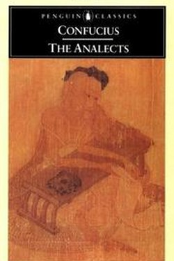
The AnalectsConfucius · -400Confucius' programme: the superior person cultivates himself daily - first study, then practice, then characte7 min · 9 lessons · free summaryThe Anxious GenerationJonathan Haidt · 2024A play-based childhood was replaced by a phone-based one - and anxiety exploded. Restore play, delay phones, a8 min · 6 lessons · free summary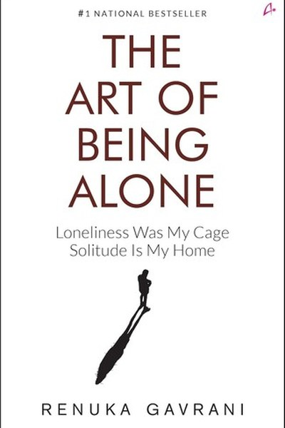
The Art of Being AloneRenuka Gavrani · 2021Renuka Gavrani's warm, practical guide to solitude: how being alone with yourself can become your greatest rel8 min · 6 lessons · free summary The Art of LearningJosh Waitzkin · 2007The subject of Searching for Bobby Fischer mastered two unrelated arts with one method: incremental growth, sm8 min · 6 lessons · free summaryThe Autobiography of Benjamin FranklinBenjamin Franklin · 1791Franklin's self-engineering: a thirteen-virtue scorecard, deliberate humility, and industriousness as identity7 min · 9 lessons · free summary
The Art of LearningJosh Waitzkin · 2007The subject of Searching for Bobby Fischer mastered two unrelated arts with one method: incremental growth, sm8 min · 6 lessons · free summaryThe Autobiography of Benjamin FranklinBenjamin Franklin · 1791Franklin's self-engineering: a thirteen-virtue scorecard, deliberate humility, and industriousness as identity7 min · 9 lessons · free summary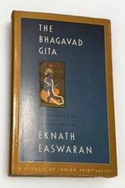
The Bhagavad GitaVyasa · -200When Arjuna collapses before the fight, Krishna teaches the three paths: act without attachment, know yourself7 min · 8 lessons · free summary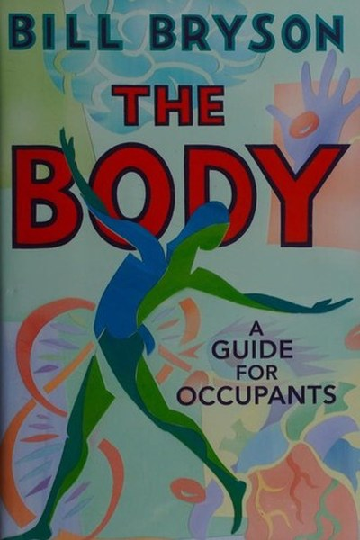
The Body: A Guide for OccupantsBill Bryson · 2019Bill Bryson's witty, awe-filled tour of the human body: the heart, the brain, the immune system and the strang8 min · 6 lessons · free summary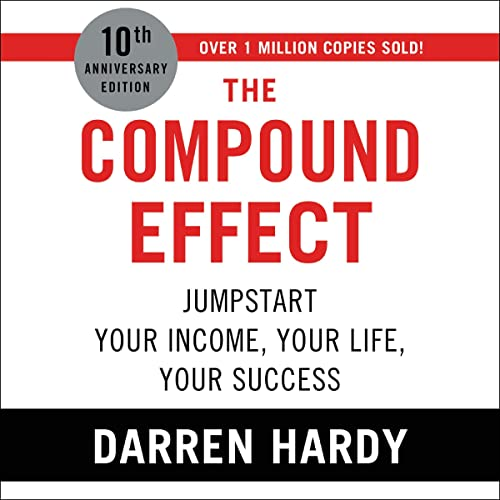
The Compound EffectDarren Hardy · 2010The magic penny beats the $3 million check. Tiny daily choices, compounded, decide everything - and you're alw8 min · 6 lessons · free summary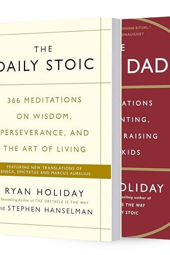
The Daily StoicRyan Holiday & Stephen Hanselman · 2016One page of ancient wisdom per day: control what you can, accept what you can't, and turn every obstacle into 8 min · 6 lessons · free summaryThe DhammapadaGautama Buddha · -300The opening verse is the whole teaching: everything is mind-made; guard the mind and you guard your world.7 min · 10 lessons · free summaryThe EnchiridionEpictetus · 125Some things are up to you; most are not. The whole of Stoicism is living in that first category.7 min · 9 lessons · free summary The Essence of the Bhagavad GitaEknath Easwaran · 2007Easwaran reads the Gita as a handbook for the workplace and home: calm action, steady mind, undivided love.7 min · 10 lessons · free summaryThe Four AgreementsDon Miguel Ruiz · 1997You were domesticated into agreements that hurt you. Replace them with four: impeccable word, nothing personal8 min · 6 lessons · free summary
The Essence of the Bhagavad GitaEknath Easwaran · 2007Easwaran reads the Gita as a handbook for the workplace and home: calm action, steady mind, undivided love.7 min · 10 lessons · free summaryThe Four AgreementsDon Miguel Ruiz · 1997You were domesticated into agreements that hurt you. Replace them with four: impeccable word, nothing personal8 min · 6 lessons · free summary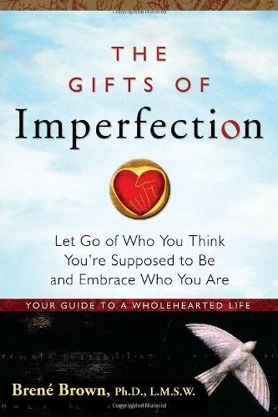
The Gifts of ImperfectionBrené Brown · 2010Brené Brown's research-backed guide to wholehearted living: courage, compassion and connection - the gifts tha8 min · 6 lessons · free summaryThe Gospel of Selfless Action (The Gita According to Gandhi)Mahatma Gandhi · 1929Gandhi read the Gita as an allegory of the inner battle, making anasakti - action without attachment to result9 min · 7 lessons · free summary The Habit of WinningPrakash Iyer · 2013Prakash Iyer shows through Indian success stories that winning is a set of repeatable habits - practice, attit8 min · 6 lessons · free summary
The Habit of WinningPrakash Iyer · 2013Prakash Iyer shows through Indian success stories that winning is a set of repeatable habits - practice, attit8 min · 6 lessons · free summary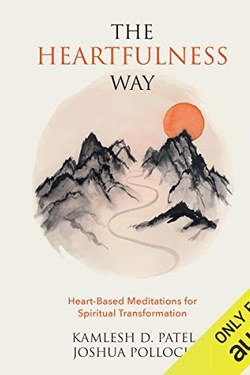
The Heartfulness WayKamlesh D. Patel · 2018Heartfulness meditation, in dialogue: a simple, transmission-based path to inner calm.7 min · 9 lessons · free summary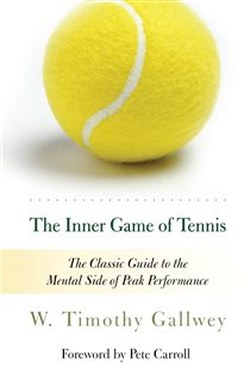
The Inner Game of TennisW. Timothy Gallwey · 1974Quiet the inner critic, trust your body's own learning, and performance improves by itself - in tennis, work a7 min · 9 lessons · free summary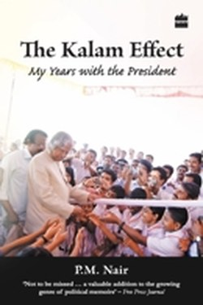
The Kalam EffectP.M. Nair · 2008A close aide's account of Kalam's method: simplicity of life, immensity of vision, and the discipline of a sci7 min · 10 lessons · free summary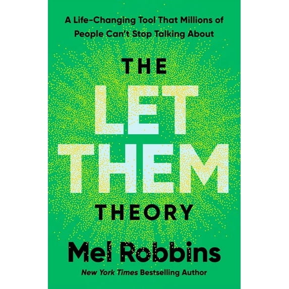
The Let Them TheoryMel Robbins · 2024Let them do what they do. Then let ME decide what I do about it. That's the whole theory - and it changes ever9 min · 7 lessons · free summary The Magic of Thinking BigDavid J. Schwartz · 1959Believe it can be done. The size of your success is set by the size of your belief - and excusitis is the fail8 min · 6 lessons · free summary
The Magic of Thinking BigDavid J. Schwartz · 1959Believe it can be done. The size of your success is set by the size of your belief - and excusitis is the fail8 min · 6 lessons · free summary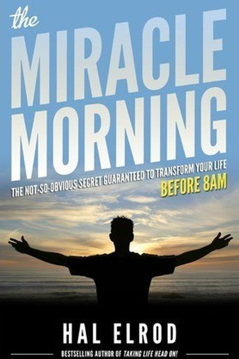
The Miracle MorningHal Elrod · 2012How you start your day sets your life. One hour, six practices, and your mornings stop being a race you're los8 min · 6 lessons · free summary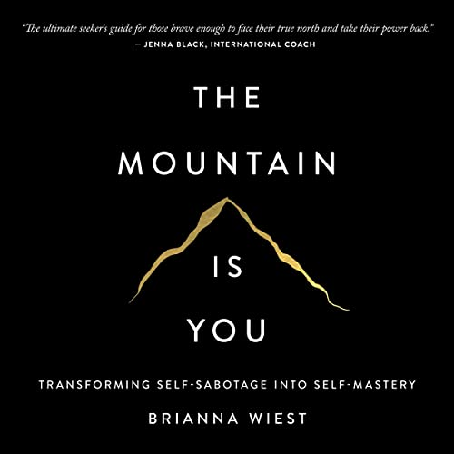
The Mountain Is YouBrianna Wiest · 2020Self-sabotage isn't self-hatred - it's self-protection pointed the wrong way. Decode the need beneath it, and 8 min · 6 lessons · free summary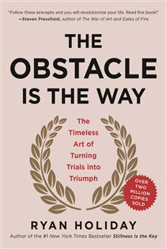
The Obstacle Is the WayRyan Holiday · 2014The impediment to action advances action. What stands in the way becomes the way - through perception, action,8 min · 6 lessons · free summaryThe Power of HabitCharles Duhigg · 2012You can't extinguish a bad habit - you can only change it: keep the cue and reward, swap the routine.8 min · 6 lessons · free summaryThe Power of NowEckhart Tolle · 1997All negativity is caused by time-denial of the present. Anxiety lives in the future, regret in the past - life8 min · 6 lessons · free summary The Power of Positive ThinkingNorman Vincent Peale · 1952Change your thoughts and you change your world: believe in yourself, empty the fear, picture the outcome, and 8 min · 6 lessons · free summaryThe Power of Your Subconscious MindJoseph Murphy · 1963Your subconscious is soil: it grows whatever you plant - thoughts of success or seeds of fear. Choose the seed9 min · 7 lessons · free summaryThe Rudest Book EverShwetabh Gangwar · 2019Shwetabh Gangwar's brutally honest guide: your self-worth is a choice you make daily, not a feeling you wait f9 min · 7 lessons · free summaryThe Second Life of Broken ThingsUnknown · 2026There is a Japanese craft where broken pottery is repaired with gold, and the mended seams become the most val10 min · 10 lessons · free summaryThe Second MountainDavid Brooks · 2019Brooks' argument that life has two mountains - the first of achievement and status, the second of commitment, 8 min · 6 lessons · free summaryThe Seven Spiritual Laws of SuccessDeepak Chopra · 1994Deepak Chopra distills success into seven universal laws: pure potentiality, giving, karma, least effort, inte9 min · 7 lessons · free summaryThe Slight EdgeJeff Olson · 2005Success is a curve, not a leap: simple daily disciplines - easy to do, easy to skip - compound into everything8 min · 6 lessons · free summaryThe Subtle Art of Not Giving a F*ckMark Manson · 2016The desire for more positive experience is itself a negative experience. Choose your struggles instead of avoi9 min · 7 lessons · free summaryThe Test of My LifeYuvraj Singh · 2013When your body, career and identity all collapse at once, resilience is a choice you make daily - with support8 min · 6 lessons · free summaryThe Three Thousand StitchesSudha Murty · 2019From a childhood of modest means to founding India's biggest philanthropy, Murty shows that character, not mon7 min · 10 lessons · free summaryThe Unsexy HoursUnknown · 2026Motivation posts get likes. Unsexy hours get results: the Tuesday-evening repetition, kept quietly for years, 10 min · 10 lessons · free summaryThe Untethered SoulMichael A. Singer · 2007There's a narrator in your head that never stops - and the discovery that you're the LISTENER, not the voice, 8 min · 6 lessons · free summaryThe UpanishadsEknath Easwaran · 1987The Upanishads' discovery: the deepest self within you is the same reality that sustains everything.7 min · 10 lessons · free summaryThe Way of the Peaceful WarriorDan Millman · 1980The warrior's way is not force but mindfulness: clear the mind of the past and future, and act now.7 min · 9 lessons · free summaryThe Winning WayHarsha Bhogle & Anita Bhogle · 2013Winning teams are built on culture, preparation and humility - not just talent - and the same code works in an8 min · 6 lessons · free summaryThe Yoga Sutras of PatanjaliPatanjali · -400Yoga is not a pose; it is the stilling of the mind's churn, and Patanjali gives the exact 8-step method.7 min · 8 lessons · free summaryThirukkuralThiruvalluvar · 500The Tamil classic covers everything from breakfast to the afterlife in two lines each: virtue first, wealth se7 min · 10 lessons · free summaryTurning PointsA.P.J. Abdul Kalam · 2012Kalam's memoir of his key decisions - joining DRDO, choosing science over a stable job, becoming President - a8 min · 6 lessons · free summary
The Power of Positive ThinkingNorman Vincent Peale · 1952Change your thoughts and you change your world: believe in yourself, empty the fear, picture the outcome, and 8 min · 6 lessons · free summaryThe Power of Your Subconscious MindJoseph Murphy · 1963Your subconscious is soil: it grows whatever you plant - thoughts of success or seeds of fear. Choose the seed9 min · 7 lessons · free summaryThe Rudest Book EverShwetabh Gangwar · 2019Shwetabh Gangwar's brutally honest guide: your self-worth is a choice you make daily, not a feeling you wait f9 min · 7 lessons · free summaryThe Second Life of Broken ThingsUnknown · 2026There is a Japanese craft where broken pottery is repaired with gold, and the mended seams become the most val10 min · 10 lessons · free summaryThe Second MountainDavid Brooks · 2019Brooks' argument that life has two mountains - the first of achievement and status, the second of commitment, 8 min · 6 lessons · free summaryThe Seven Spiritual Laws of SuccessDeepak Chopra · 1994Deepak Chopra distills success into seven universal laws: pure potentiality, giving, karma, least effort, inte9 min · 7 lessons · free summaryThe Slight EdgeJeff Olson · 2005Success is a curve, not a leap: simple daily disciplines - easy to do, easy to skip - compound into everything8 min · 6 lessons · free summaryThe Subtle Art of Not Giving a F*ckMark Manson · 2016The desire for more positive experience is itself a negative experience. Choose your struggles instead of avoi9 min · 7 lessons · free summaryThe Test of My LifeYuvraj Singh · 2013When your body, career and identity all collapse at once, resilience is a choice you make daily - with support8 min · 6 lessons · free summaryThe Three Thousand StitchesSudha Murty · 2019From a childhood of modest means to founding India's biggest philanthropy, Murty shows that character, not mon7 min · 10 lessons · free summaryThe Unsexy HoursUnknown · 2026Motivation posts get likes. Unsexy hours get results: the Tuesday-evening repetition, kept quietly for years, 10 min · 10 lessons · free summaryThe Untethered SoulMichael A. Singer · 2007There's a narrator in your head that never stops - and the discovery that you're the LISTENER, not the voice, 8 min · 6 lessons · free summaryThe UpanishadsEknath Easwaran · 1987The Upanishads' discovery: the deepest self within you is the same reality that sustains everything.7 min · 10 lessons · free summaryThe Way of the Peaceful WarriorDan Millman · 1980The warrior's way is not force but mindfulness: clear the mind of the past and future, and act now.7 min · 9 lessons · free summaryThe Winning WayHarsha Bhogle & Anita Bhogle · 2013Winning teams are built on culture, preparation and humility - not just talent - and the same code works in an8 min · 6 lessons · free summaryThe Yoga Sutras of PatanjaliPatanjali · -400Yoga is not a pose; it is the stilling of the mind's churn, and Patanjali gives the exact 8-step method.7 min · 8 lessons · free summaryThirukkuralThiruvalluvar · 500The Tamil classic covers everything from breakfast to the afterlife in two lines each: virtue first, wealth se7 min · 10 lessons · free summaryTurning PointsA.P.J. Abdul Kalam · 2012Kalam's memoir of his key decisions - joining DRDO, choosing science over a stable job, becoming President - a8 min · 6 lessons · free summary What I Talk About When I Talk About RunningHaruki Murakami · 2007The novelist's running diary: a life built on monotony, repetition and the quiet refusal to quit.7 min · 9 lessons · free summaryWhat Young India WantsChetan Bhagat · 2012Chetan Bhagat's essays to young India - on education, corruption, careers and love - arguing that personal res8 min · 6 lessons · free summaryWhen Breath Becomes AirPaul Kalanithi · 2016The question is not how long you live but what you live for - Kalanithi's unfinished answer, finished by love.7 min · 10 lessons · free summaryWho Moved My Cheese?Spencer Johnson · 1998The cheese keeps moving. The question is whether you sniff the air and run - or sit in the empty station deman8 min · 6 lessons · free summaryWhy We SleepMatthew Walker · 2017Sleep is not the absence of productivity - it is the daily maintenance that makes every waking hour worth more8 min · 6 lessons · free summaryWise & Otherwise: A Lifetime of ExperienceSudha Murty · 2002The deepest lessons come not from lectures but from watching how ordinary people handle money, pride, kindness8 min · 6 lessons · free summary
What I Talk About When I Talk About RunningHaruki Murakami · 2007The novelist's running diary: a life built on monotony, repetition and the quiet refusal to quit.7 min · 9 lessons · free summaryWhat Young India WantsChetan Bhagat · 2012Chetan Bhagat's essays to young India - on education, corruption, careers and love - arguing that personal res8 min · 6 lessons · free summaryWhen Breath Becomes AirPaul Kalanithi · 2016The question is not how long you live but what you live for - Kalanithi's unfinished answer, finished by love.7 min · 10 lessons · free summaryWho Moved My Cheese?Spencer Johnson · 1998The cheese keeps moving. The question is whether you sniff the air and run - or sit in the empty station deman8 min · 6 lessons · free summaryWhy We SleepMatthew Walker · 2017Sleep is not the absence of productivity - it is the daily maintenance that makes every waking hour worth more8 min · 6 lessons · free summaryWise & Otherwise: A Lifetime of ExperienceSudha Murty · 2002The deepest lessons come not from lectures but from watching how ordinary people handle money, pride, kindness8 min · 6 lessons · free summary You Can WinShiv Khera · 1998Success is not an accident: attitude, positive thinking, goal-setting, and character - built step by step, the8 min · 6 lessons · free summary
You Can WinShiv Khera · 1998Success is not an accident: attitude, positive thinking, goal-setting, and character - built step by step, the8 min · 6 lessons · free summaryEvery summary free. Mark lessons as read, listen in your language, share quote cards.